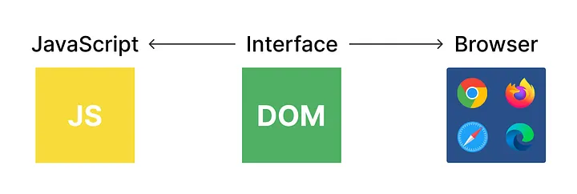

Posted: 10/12/2025

A static page is just HTML and CSS, but a dynamic page reacts to data
and user input. The browser exposes the Document Object Model (DOM)—a
tree of nodes you can create, update, and remove with JavaScript. By
selecting a container, building elements with
document.createElement, setting attributes, and appending
them to the page, you can render lists, cards, and interactive UI
without any frameworks.
Interactivity comes from events. Add listeners for clicks, input changes, or form submissions, and update the DOM in response. Keep a simple “state” in memory (like an array of items) and re-render sections that change. Small patterns go a long way: clear containers before re-rendering, batch DOM writes to minimize layout thrash, and keep rendering logic in one place so it's easy to reason about.
As your UI grows, be mindful of accessibility and performance. Prefer semantic elements, connect labels to inputs, and ensure keyboard focus flows logically. For speed, lazy-load images, debounce input handlers, and avoid unnecessary reflows. These habits map directly to modern frameworks, which automate much of this plumbing. Learning raw DOM first gives you a foundation that makes React, Vue, or Angular feel intuitive rather than magical.